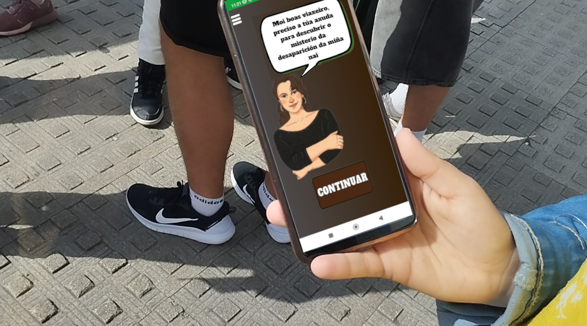

Este proyecto nació justo después de la pandemia, donde las mascarillas limitaban la interacción social, con la idea de que el alumnado pudiera salir fuera de las clases a aprender, divertirse e interactuar con sus compañeros y compañeras con el objetivo de crear actividades lúdicas donde todo el instituto pudiera disfrutar en su ciudad. ¡Os anticipo que estas actividades van a ser creadas enteramente por el alumnado!

En esta formación, vamos a descubrir como el alumnado de 1º TIC consigue programar con éxito aplicaciones móviles con APP Inventor para que sus compañeros y compañeras puedan jugar a una gincana muy especial mientras recorren y descubren su ciudad.
En esta formación intentaré trasladar las explicaciones realizadas en clase, para que sirva de guía e inspiración al resto del profesorado, mostrando cómo las actividades lúdicas, tecnológicas y educativas pueden dinamizar el aprendizaje y favorecer la participación activa del alumnado.
Os adelanto que buscaremos potenciar el talento del alumnado y aprovecharlo para que realicen diferentes roles como pueden ser: programador, diseñador gráfico, marketing, creador de productos audiovisuales, investigador, escritor, etc y potenciar el uso de las TIC durante la realización de todo el proyecto.
Como novedad, se propone la integración de la Inteligencia Artificial, IA, en el presente curso 2024/2025 para potenciar todas las actividades. Con la inteligencia artificial podemos crear imágenes que mejoren el interfaz de las aplicaciones, diseñar algoritmos de aprendizaje automático que distingan entre diferentes fotografías para poder integrarlas en la aplicación e incluso dar vida a personajes ilustres de la historia. Esta innovación no sólo enriquecerá la experiencia de aprendizaje, sino que también llevará los proyectos al siguiente nivel. ¿Estás preparado? A continuación te describo brevemente las etapas del proyecto, pero antes, ¿qué te parece si despertamos las vocaciones digitales en tu aula?
Imagen 1: Serxio G. R.
Imagen 2: ChatGPT 2025 La revolución digital ha transformado nuestra forma de vivir ¡y también la de crear! Hoy, cualquier joven con curiosidad, ganas de aprender y una buena idea puede cambiar el mundo desde su propio ordenador.
La revolución digital ha transformado nuestra forma de vivir ¡y también la de crear! Hoy, cualquier joven con curiosidad, ganas de aprender y una buena idea puede cambiar el mundo desde su propio ordenador.